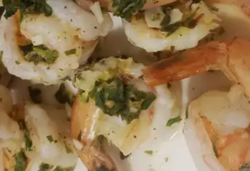

Lemon-Garlic Shrimp Recipe

Lemon-garlic shrimp is a delicious appetizer that's perfect to throw together before a last-minute party. Or, serve this fresh, citrusy seafood over rice or pasta and make it a main dish on a busy weeknight when you're short on time.
Ingredients
1 tablespoon olive oil, or as needed
16 large shrimp - peeled, deveined, and tails on, or more to taste
3 large cloves garlic, smashed, or more to taste
½ teaspoon crushed red pepper flakes, or to taste
2 teaspoons seafood seasoning (such as Old Bay®), or to taste
salt and ground black pepper to taste
3 tablespoons chopped fresh parsley
2 tablespoons lemon juice/li>
3 teaspoons lemon zest
Directions
Step 1:
Gather all ingredients.
Step 2:
Heat oil in a large skillet over medium-low heat until warm, 2 to 3 minutes. Add shrimp, garlic, and pepper flakes all at once and stir together. Add seafood seasoning, salt, and black pepper and mix until combined.
Step 3:
Cook and stir until shrimp are bright pink on the outside and the meat is opaque, 3 to 5 minutes.
Step 4:
Reduce heat to medium and melt butter in the pan juices, scraping up any browned bits from the bottom of the pan. Add garlic and cook until fragrant, about 30 seconds. Add honey, water, and vinegar. Increase heat to medium-high and cook, stirring occasionally until sauce has reduced down and slightly thickened, 3 to 4 minutes. Return pork back to the skillet and baste generously with the sauce.